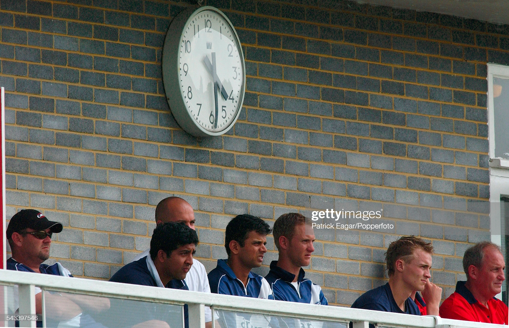
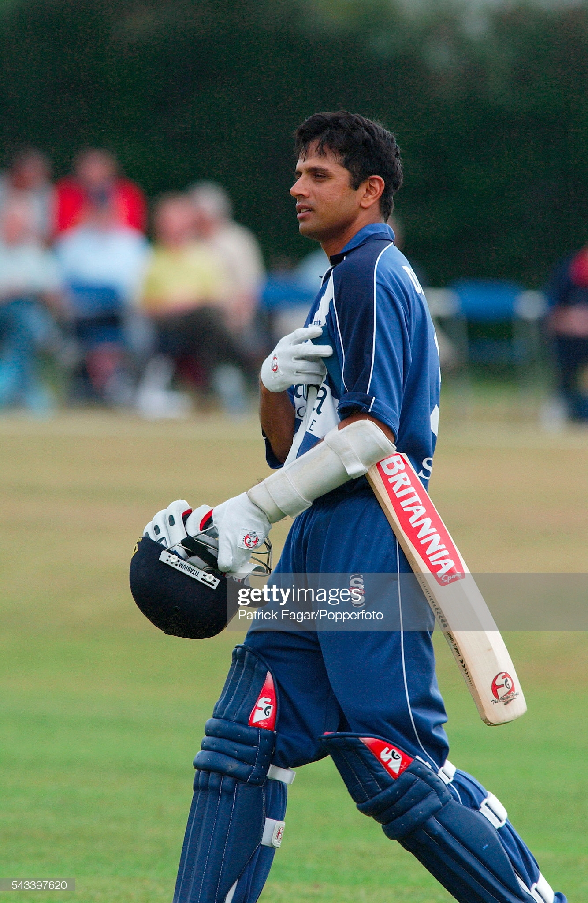

Rahul Dravid, already recognised as one the world’s best ever batsmen, has been tipped to coach the Indian men’s team on a permanent basis.
Craig Wright, who is currently assistant coach for Scotland’s men’s team, captained Dravid for Scotland in 2003, and the Indian legend clearly made a lasting impression. Dravid scored 600 runs at an average of 66.66 in 11 innings, but it was more than just his batting that Wright remembers
“On top of working with the national team players he did a lot of travelling around the country to do coaching events with kids – for someone of that stature to willingly invest the time and effort that he did was a testament to the man. It was no surprise to see him become a highly rated coach with the Indian U19 side, and I wouldn’t be at all shocked to see him as the India men’s head coach in the future.”
“The way he would compile an innings was incredible. He’d get to 50 or 60 without seeming to play a shot then he’d step on the gas and smash it everywhere. He had a much more dynamic side to his batting than I think he was given credit for.”
Wright played 195 times for Scotland between 1997 and 2009, but he describes 2003 as a particularly exciting time. Scotland’s entry into the English National League county competition meant an increased number of high quality fixtures, and a significant sponsorship deal with Lloyds TSB was announced around the same time that Dravid’s signature was secured.
“Several things came together to make it a bit of a golden period for the game in this country. I think my initial reaction was disbelief when it was suggested that we had a chance of signing someone like [Dravid], but obviously when it was confirmed there was a huge buzz”.
Scotland’s marquee man more than lived up to the hype. After a slow start in his first two games, 25 against Hampshire and a first-ball duck against a touring Pakistan side respectively, Dravid showed his class with two unbeaten hundreds in his next three knocks.
Wright recalls: “The way he would compile an innings was incredible. He’d get to 50 or 60 without seeming to play a shot then he’d step on the gas and smash it everywhere. He had a much more dynamic side to his batting than I think he was given credit for.”
Those knocks did not yield any victories however, and despite his own brilliance, the innings that meant the most to Dravid came against Sussex, where he made 69 off 79 balls, and put on 167 with Jon Kent as Scotland won by 6 wickets.
“It took us a while to get a win after he arrived, and he was really frustrated by that. His performances were magnificent, but unfortunately the rest of the team struggled to maintain our levels of performance – his joy when we did finally win a game was so genuine it was great to see.”
Indeed, it was his professionalism and unerring will to win that set him apart as something special throughout his playing career. The talent and the ability to score runs was evident, but what differentiates great batsmen from good batsmen is mental fortitude – prizing your wicket innings after innings, and steadfastly refusing to give it away.
Dravid had that in spades, as demonstrated not only by his success for India but the continuous nature of it. In the 2003/04 season, immediately after his spell in Scotland, he averaged 95.46 in Tests, and went on to play international cricket for almost another decade. Only four men in history have played more Test matches than him (164), and only three have scored more Test runs (13,288).
“It was evident straight away what a driven and determined guy he was”, Wright says. “A quiet, humble man with strong values. It was no surprise at all to see him go on and become the number one batsman in the world.”
For those of you thinking that Dravid can do no wrong, fear not – his stint in Scotland was not entirely flawless. “One of the first things I had to do after I’d met him was show him how to work the washing machine in the flat where he was staying,” Wright remembers. “We took him to play some golf as well, but his ball striking skills did not translate to the golf course – his driving left a bit to be desired! So he’s not perfect!”
It was his cricket rather than his golf that will live long in the memory however, and despite Dravid’s short stay in Scotland, his legacy is secure. Wright told me: “Scotland have been fortunate to have many top international players representing the team as the overseas player in county games, but Dravid I’m sure would rank right at the top of the list both on and off the field.”